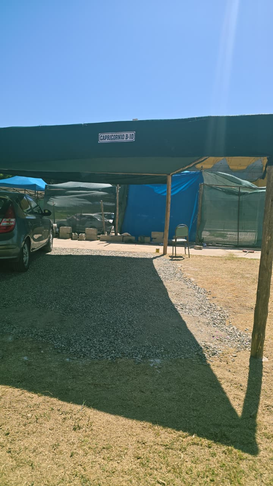
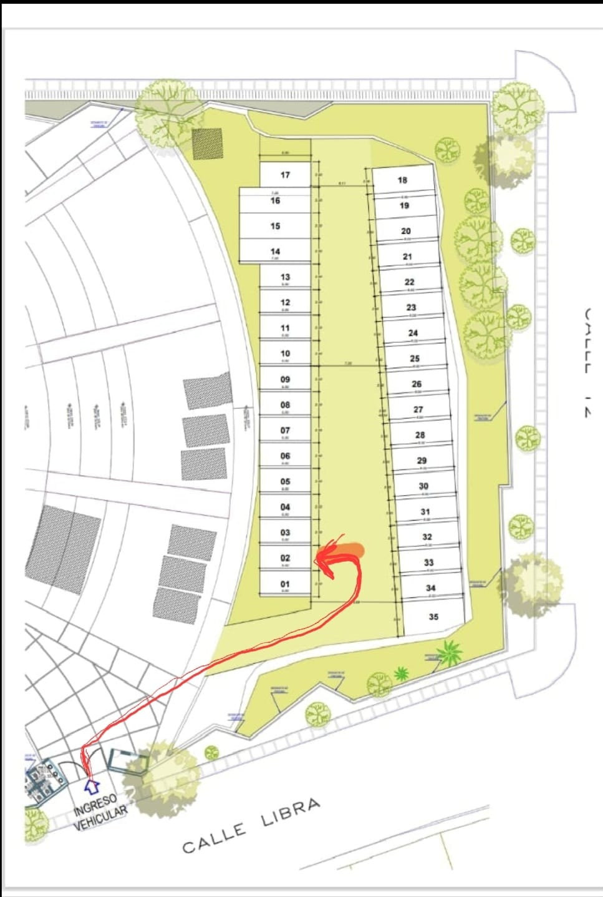

ARICA SUITES · SEDE ROSA ARA
Tu llegada,
con un lugar
para estacionar.
Una guía sencilla para encontrar la cochera y ubicar tu espacio. Disponible únicamente en nuestra sede Rosa Ara.
Sujeta a disponibilidad · Confirma antes de llegar
VER CÓMO INGRESAR ↘
SEDESolo Rosa Ara
INGRESO VEHICULARCalle Libra
ESPACIO ASIGNADO#2 · Capricornio B-10
01 / ENCUENTRA EL INGRESO
El camino hasta
tu cochera.
Confirma la disponibilidad.
Antes de dirigirte a la cochera, consulta con Arica Suites y espera la confirmación de uso.
Ingresa por calle Libra.
En la referencia de ubicación, la flecha roja señala el ingreso y la marca azul indica la zona de estacionamiento.
Sigue el recorrido del plano.
Desde el ingreso vehicular, sigue la línea roja hasta el espacio #2, señalado en la fila izquierda del plano.
Busca «Capricornio B-10».
Es el único espacio con este letrero. Verifica el nombre antes de estacionar y utiliza únicamente el espacio #2.
Abre la imagen con las marcas de ingreso y estacionamiento.

02 / RECONOCE TU ESPACIO
#2El único que dice
Capricornio B-10.
Ese es el letrero que identifica la cochera que debes utilizar. Comprueba que coincida con la fotografía antes de dejar tu vehículo.
Contacta con Arica Suites antes de estacionar en otro lugar.
03 / CONOCE LA COCHERA
Una mirada antes
de llegar.
Sigue el recorrido en orden: primero la parte 1 y luego la parte 2 para familiarizarte con la cochera de Rosa Ara.
Parte 1 · Inicio del recorrido
Parte 2 · Continuación del recorrido
04 / ANTES DE LLEGAR
Todo claro,
desde el inicio.
¿En qué sede hay cochera?
Únicamente en Rosa Ara. Las otras sedes de Arica Suites no cuentan con cochera.
¿La cochera está siempre disponible?
No. Su uso está sujeto a disponibilidad. Consulta y recibe la confirmación de Arica Suites antes de llegar.
¿Qué espacio debo utilizar?
Solo el espacio #2, identificado con el letrero «Capricornio B-10». Usa el plano y la fotografía de esta guía como referencia.
¿Dónde consulto los detalles de acceso?
Escríbenos para confirmar disponibilidad y coordinar los detalles de ingreso antes de tu llegada.
PRIMERO, CONFIRMEMOS TU LUGAR
¿Vienes con auto?
Consulta la disponibilidad de la cochera en Rosa Ara antes de llegar.